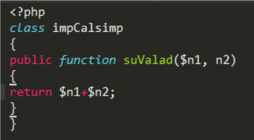
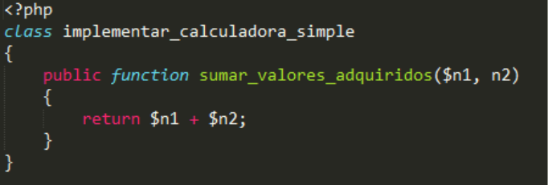

Código Limpio
o dejemos la basura de lado
El Codigo Limpio debe ser...
- Fácil de leer, expresivo y sencillo
- Probado mediante tests automáticos
- Hace una única cosa (valga la redundancia)
- No existe duplicidad en él
- Utiliza el menor número de elementos posibles
- Realiza abstracciones de elementos similares
Regla de los Boy Scout
“Siempre deja el lugar de acampamento más limpio que como lo encontraste”.

Los Nombres y la Identación
Los Nombres y la Identación
Funciones
- Deben ser cortas
- Hacer una única cosa y mantenerse dentro del mismo nivel de abstracción
- Reducir al mínimo el número de argumentos. Maximo 3 u objeto
- Pero lo principal es eliminar toda la duplicidad (Refactorización)
Comentarios
La necesidad de comentarios para aclarar algo es síntoma de que hay código mal escrito que debería ser rediseñado. Es preferible expresarse mediante el propio código.
Razones para utilizar Comentarios
- Aspectos legales del código
- Advertir consecuencias
- TODO
- Remarcar la importancia de algo
Formateo o Identacion
El formateo afecta directamente a la legibilidad del código. El código se lee de arriba abajo y de izquierda a derecha. Los espacios verticales y horizontales permiten separar ideas y conceptos distintos.
Se debe mantener un estilo uniforme, y para ello se debe consensuar con todo el equipo las reglas de formateo. Las reglas elegidas no son tan importantes como el hecho de que todo el mundo se atenga a ellas.
Test Unitarios
Un test unitario es una pieza de código que comprueba el resultado de otro código. Funcionan tomando un objeto en un estado determinado y actúando con él (por ejemplo llamando a un método o una función) para comprobar que el valor obtenido se corresponde con el esperado. Algo del tipo:
“Si el resultado de la función ‘foo’ es igual a 5, todo está correcto”

Fuente
http://tratandodeentenderlo.blogspot.com/2011/01/clean-code.html
"Fórmate tú en vez de esperar a que te formen y modelen."
"La vida debe ser una continua educación."